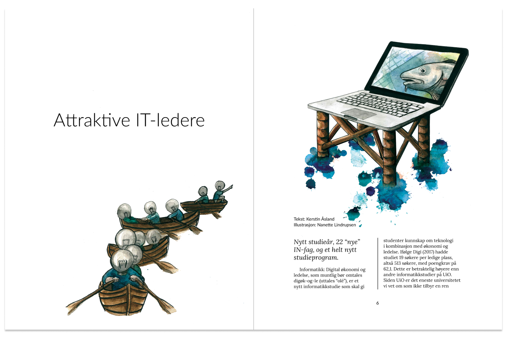
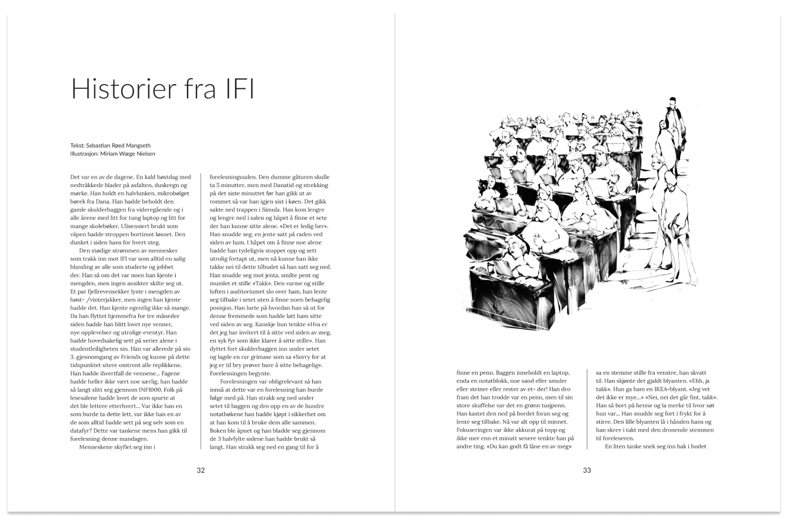
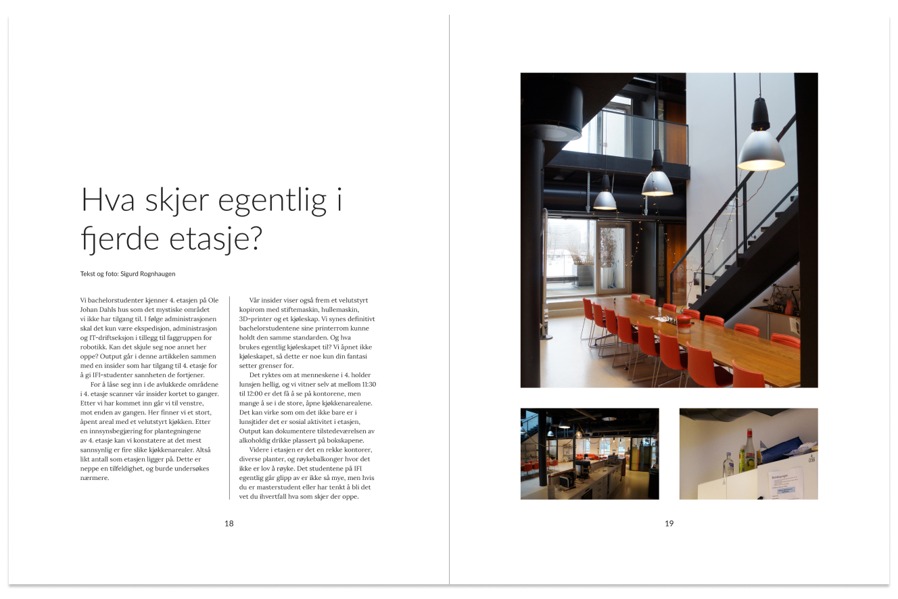
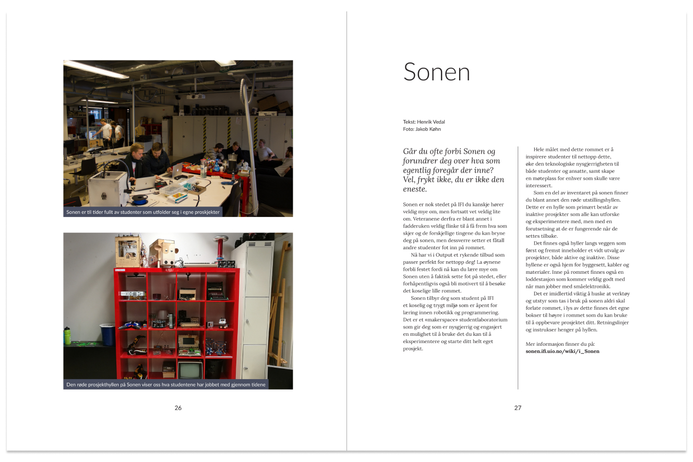
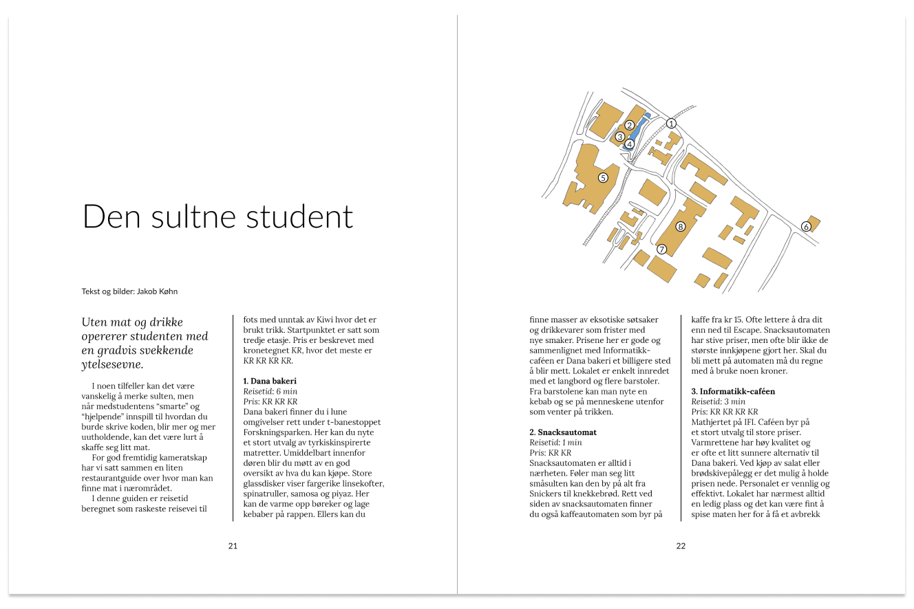
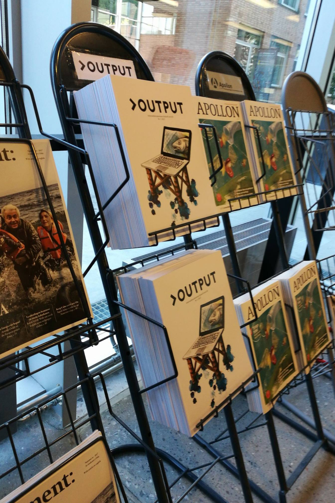

Jakob Køhn
– Output issue 1 and 2

A 3D render of the first two issues.
Output issue 1 and 2
Output· 2017 · Magazine Design
Output is a physical publication issued twice a year, written by and for students at the Department of Informatics, University of Oslo. I participated in founding and producing the first and second issue of the student’s publication. Output is still being released, and this fall they released their sixth issue.
My role: Head editor and designer
I was responsible for producing and releasing the student’s publication. I had roles such as editor, designer, author and business contact.
The target group was students. In order to make it more tempting to read something after a long day with heavy curriculum we wanted the design to appear as entertaining and easy to read. We also wanted to release it as a physical magazine, in order to make it easier to focus in an otherwise digital world.
We started the design process by drawing inspiration from similar magazines. We wanted the design to focus on the text, with wide margins, spacious line heights and few visual distractions. By dividing the pages in a grid of four vertical sections the design was able to facilitate varied content while still maintaining a consistent expression.
Technologies and tools:
Adobe InDesign.
Links:
Output issue 1 (Norwegian)Output issue 2 (Norwegian)
Images:
An article that shows how an illustration can work with the text over two pages.
An article that demonstrates how to the vertical grid facilitates large illustrations.
An article that shows how one page can contain multiple variations of image sizes.
An article that shows how two images can be placed above each other on the same page.
An article that shows how the columns with texts can begin on the same vertical height with different elements above them.
The first issue of Output on display.
jakobk@jakobk.no